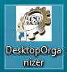
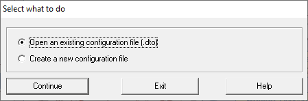

After being run for the first time, this program can be launched in two ways:
- by double clicking on the direct link created on the Desktop:

In this case, the application will present the following form, to select what action to take:

- Choosing "Open an existing configuration file (.dto)", the application will open the form to select an "*.dto" file, initially in the "Desktop/DesktopOrganizer_files" subdirectory. The user may select any other subdirectory.
- Choosing "Create a new configuration file", the application will also open the form where the user will be prompted to introduce the name of a new configuration file, that must not exists. See also here.
- Double-clicking on any file with "*.dto" extension. In this case the program will open it immediately, using the Standard View.
Related Topics:
By Last Execution Date View
By Last Execution Date View